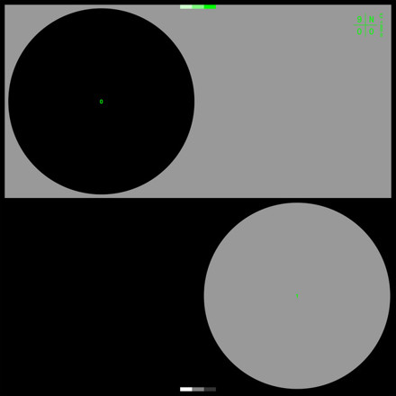

NINETOZERO v0.006
11 изображений с геометрическим оформлением. Авторство принадлежит соответствующим правообладателям. Происхождение изображений.
Геометрические обложки





11 изображений с геометрическим оформлением. Авторство принадлежит соответствующим правообладателям. Происхождение изображений.
